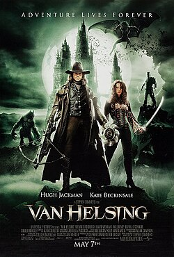
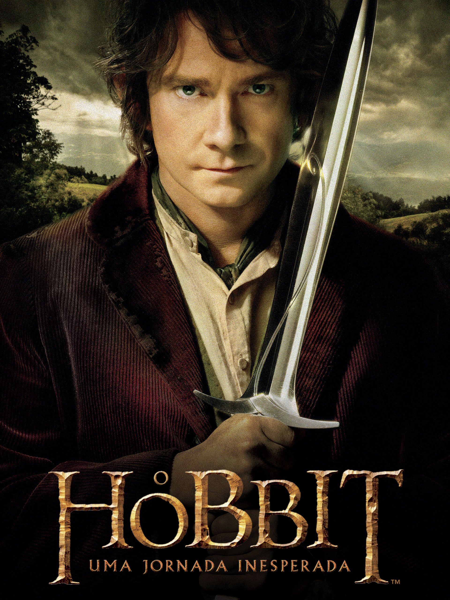
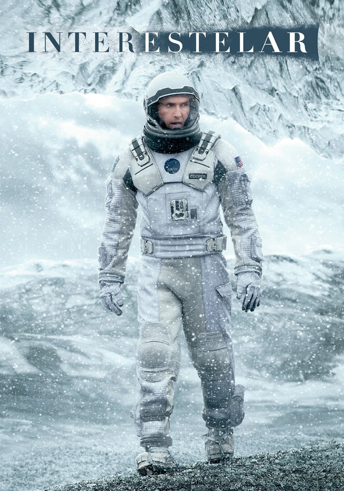

Transformers

Autor: Alex Kurtzman, Roberto Orci
Duração:2h 24min
Classificação indicativa: Não recomendado para menos de 10 anos
Curiosidade: A atriz Megan Fox teve que malhar e ganhar quatro quilos e meio de
músculos para suportar o esforço das cenas de ação. O nome de sua personagem, "Mikaela
Banes" é uma clara referência ao nome do próprio diretor, Michael Bay.
Avatar
Autor: James Cameron
Duração: 2h 42m
Classificação indicativa: Não recomendado para menos de 12 anos
Curiosidade: Avatar é um filme que marcou a história do cinema de várias maneiras,
mas também por ser a produção que levou estatuetas do Oscar® para casa que arrecadou a maior
bilheteria de todos os tempos. O faturamento total chegou, atualmente, em 2 bilhões e 847
mil dólares, segundo a revista Screenrant.
Van Helsing - O Caçador de Monstros
 Autor: Stephen Sommers
Duração:2h 11m
Classificação indicativa: Não recomendado para menores de 14 anos
Curiosidade: Durante as filmagens, o ator Hugh Jackman quebrou acidentalmente a mão de um figurante.
Godzilla vs. Kong

Autor: Eric Pearson, Max Borenstein
Duração: 1h 54min
Classificação indicativa: Não recomendado para menos de 12 anos
Curiosidade: Para não dar margem a brigas entre fãs americanos e japoneses, os produtores evitaram que houvesse um vencedor no primeiro encontro entre King Kong e Godzilla em 1963, algo parecido com o cuidado tomado na nova empreitada para se precaver de ofensas generalizadas nas redes sociais. Isso não impediu que os membros da equipe de filmagem escolhessem seu monstro preferido e zoassem uns aos outros durante a produção.
O Hobbit: Uma Jornada Inesperada
Autor: Peter Jackson, Philippa Boyens
Duração: 2h 49min
Classificação indicativa: Não recomendado para menos de 12 anos
Curiosidade: As ilustrações originais de “O Hobbit” foram feitas pelo próprio Tolkien! Além de criar toda a história, os personagens e os desfechos, o escritor desenhou algumas das passagens e até mesmo fez os mapas que são conhecidos pelos fãs até hoje!
Gente Grande

Autor:Fred Wolf, Adam Sandler
Duração:1h 42min
Classificação indicativa: Não recomendado para menos de 12 anos
Curiosidade: Sandler ficou tão satisfeito com a bilheteria do filme que decidiu presentear cada um dos quatro protagonistas com um carro de US$ 200 mil da marca italiana Maserati, segundo o Showbiz CheatSheet.
Demon Slayer: Mugen Train

Autor: Koyoharu Gotoge
Duração: 1h 57min
Classificação indicativa: Não recomendado para menos de 14 anos
Curiosidade: Os designs de personagens, especialmente os demônios, são influenciados por diversas culturas e mitologias. Isso é evidenciado nos demônios de diferentes arcos, que exibem uma variedade de formas e habilidades únicas.
Um Espião e Meio

Autores: Rawson Marshall Thurber, Ike Barinholtz
Duração: 1h 47min
Classificação indicativa: Não recomendado para menos de 14 anos
Curiosidade: A princípio, o título nacional do filme era Central de Inteligência, mais fiel ao nome original, porém, a versão oficial ficou Um Espião e Meio.
O Espetacular Homem Aranha

Autores: James Vanderbilt, Alvin Sargent
Duração: 2h 17min
Classificação indicativa: Não recomendado para menos de 12 anos
Curiosidade: No longa, o ator Andrew Garfield realizou muitas de suas próprias acrobacias, com a ajuda de dublês especializados em acrobacias. Garfield passou por um extenso treinamento para aprender a fazer saltos, giros e outros movimentos complexos.
Interestelar
 Autores: Jonathan Nolan, Christopher Nolan
Duração: 2h 49min
Classificação indicativa: Não recomendado para menos de 10 anos
Curiosidade: O filme usou efeitos especiais incríveis. Mas, acredite ou não, a maior parte de TARS foi feita com efeitos práticos. Ele estava presente com frequência, fisicamente, e era controlado por marionetes.